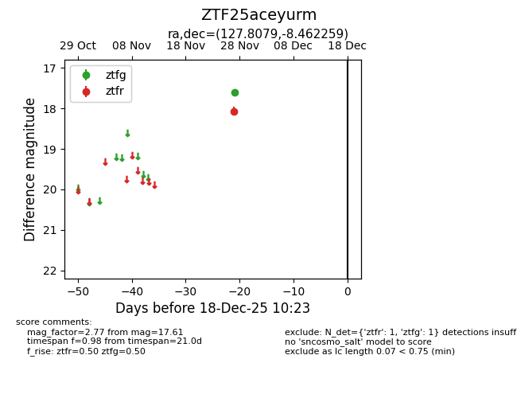
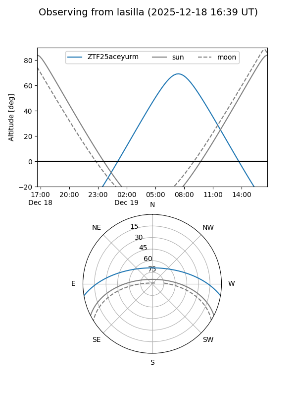
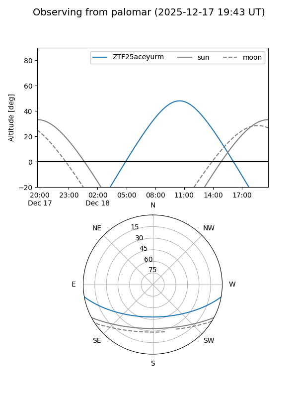

ZTF25aceyurm
Target ZTF25aceyurm at 2025-12-18 11:17
Aliases and brokers:
FINK: fink-portal.org/ZTF25aceyurm
Lasair: lasair-ztf.lsst.ac.uk/objects/ZTF25aceyurm
ALeRCE: alerce.online/object/ZTF25aceyurm
alt names
ZTF25aceyurm (ztf,fink_ztf)
Coordinates:
equatorial (ra, dec) = 127.8079,-8.46226
equatorial (HMS+DMS) = 08:31:13.91,-08:27:44.13
galactic (l, b) = (232.6378,+17.71070)
Photometry
last ztfg=17.61, ztfr=18.07
1 ztfg, 1 ztfr detections
Lightcurve

Visibility


Additional plots